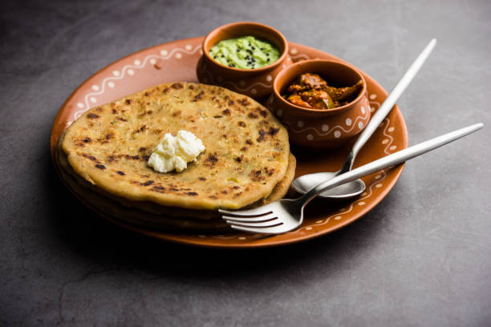

Aloo Paratha
Aloo means “potato” and paratha means “stuffed flatbread” in Hindi, so the name is quite telling: aloo paratha is an unleavened whole wheat flatbread stuffed with a savory spiced potato mixture.
In North Indian families, parathas are made with lots of love and affection, not to mention lots of ghee and butter (makhan). If you lean towards a healthier lifestyle, you can easily opt to roast aloo paratha in oil and serve them with curd (plain yogurt) instead of butter.

Ingredients
For potato stuffing
- 3 to 4 medium potatoes - boiled and mashed
- 1 to 2 green chilies - chopped finely
- ¼ to ½ teaspoon kashmiri red chilli powder or cayenne pepper or paprika, optional
- ¼ to ½ teaspoon Garam Masala
- ½ to 1 teaspoon dry mango powder (amchur powder)
- 1 tablespoon finely chopped coriander leaves - optional
- salt as required
- oil or ghee, as required for roasting paratha
For paratha dough
- 2 cups whole wheat flour
- ½ teaspoon salt or add as required
- 1 tablespoon oil or ghee (clarified butter)
- water as required for kneading
Instructions
Making potato stuffing
- First boil the potatoes and peel them. You can boil or steam the potatoes in a pressure cooker, steamer or electric cooker.
- Chop and then mash the potatoes with a potato masher.
- The potatoes should be mashed very well. There should be no lumps or small pieces in it.
- Now add the chopped green chilies, garam masala powder, red chili powder, dry mango powder and salt.
- Mix the spice powders and green chilies with the mashed potatoes very well. Check the taste and add more salt or red chili powder or dry mango powder as per your taste.
dough
- In another bowl or pan, take whole wheat flour (atta).
- Make a well in the center. Add salt, oil and about half of the water.
- Bring the mixture together and knead into a smooth soft dough.
- Cover and keep the dough aside for 20 to 30 minutes.
Stuffing and rolling
Method 1
- Pinch two small balls from the dough. Flatten them and dust with whole wheat flour.
- With a rolling pin, roll them into about 4 to 5 inches diameter rounds . Try making both the rounds of the same size.
- On one of the rolled dough circle, place the potato stuffing in the center and keep about 1 inch empty space from the sides.
- Gently place the second circle on top.
- Press and seal the edges with your fingertips.
- Dust some flour on the stuffed paratha and roll into a round of about 7 to 8 inches in diameter or about the size of a normal roti or chapati.
Method 2
- Pinch a medium ball dough. Roll and flatten it. Dust with some flour and roll it in a circle of about 5 to 5.5 inches in diameter.
- Place the potato stuffing in the center, keeping about 2 to 2.5 inches space from the sides.
- Take the edge and start pleating as well as bringing the pleats in the center.
- Join the pleats together. The pleats have to be joined well, as otherwise there will be gaps while rolling and the filling comes out.
- In case you do see the filling, then just take a small piece of dough and cover the gap. Roll to smoothen out the small piece of dough.
- Press the pleats from center.
- Sprinkle some flour and roll this version of aloo paratha to about the same size as that of a chapati or roti.
Roasting
- On a hot tava (tawa or skillet or griddle) place the rolled paratha.
- The tawa or skillet be hot and not at a low temperature. Cooking parathas at a low flame will harden them. Parathas ideally are crisp as well as soft.
- When the base is partly cooked, flip the alu paratha using a spatula or tongs.
- Spread some ghee on the partly cooked part.
- Flip again and this time this side has to be cooked more than the previous side. You will see brown spots on the paratha.
- Spread some ghee on this side too. A well made and well roasted aloo ka paratha will puff up.
- Flip again once or twice till both the sides of aloo paratha are cooked properly. You should see crisp brown spots on the paratha.
- You can also press the paratha edges with a spatula or spoon, so that they are fried well. As some time, the paratha edges are not cooked well so keep this point in mind.
- Make all aloo ke parathe this way and stack them up in a roti basket or casserole.
- You can also serve the aloo paratha directly from the tawa (skillet) straight in the serving plate. Serve some extra butter on the side, along with mango pickle or lemon pickle or garlic pickle or some yogurt.
- If you are serving them as an evening snack then you can also serve them with a cup of hot tea or lassi.